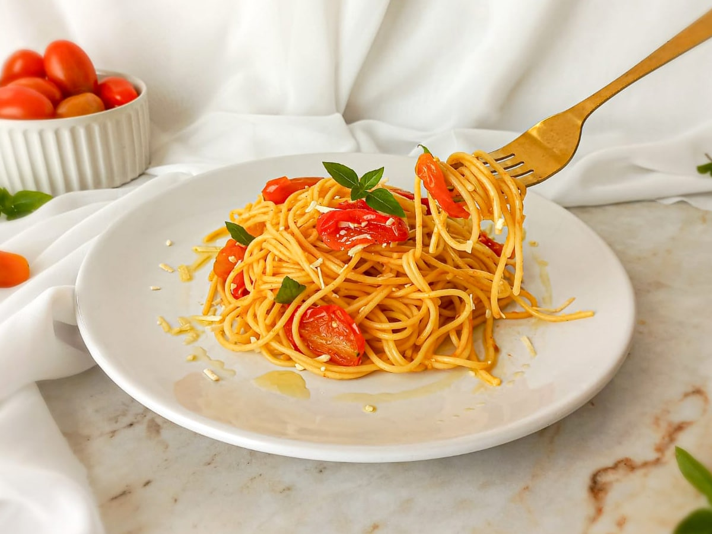

Uma receita clássica e deliciosa
A macarronada italiana é uma receita tradicional, saborosa e muito apreciada. Nesta página você encontrará os ingredientes, o modo de preparo e algumas dicas para deixar seu prato ainda melhor.
O objetivo desta atividade é praticar HTML e CSS, principalmente o uso do display flex para organizar melhor o conteúdo da página.

Ingredientes
- 500g de macarrão
- 500g de carne moída
- 2 tomates picados
- 1 cebola
- 2 dentes de alho
- Molho de tomate
- Sal a gosto
- Pimenta-do-reino
- Queijo ralado
Modo de Preparo
- Cozinhe o macarrão conforme instruções da embalagem.
- Refogue a cebola e o alho.
- Adicione a carne moída e cozinhe bem.
- Acrescente os tomates e o molho de tomate.
- Tempere com sal e pimenta.
- Misture o molho ao macarrão.
- Finalize com queijo ralado e sirva.
Dicas do Chef
Use queijo ralado
O queijo ralado dá um sabor especial e melhora a finalização do prato.
Capriche no molho
Um molho bem temperado faz toda a diferença no resultado final.
Sirva quente
A macarronada fica muito mais saborosa quando servida logo após o preparo.